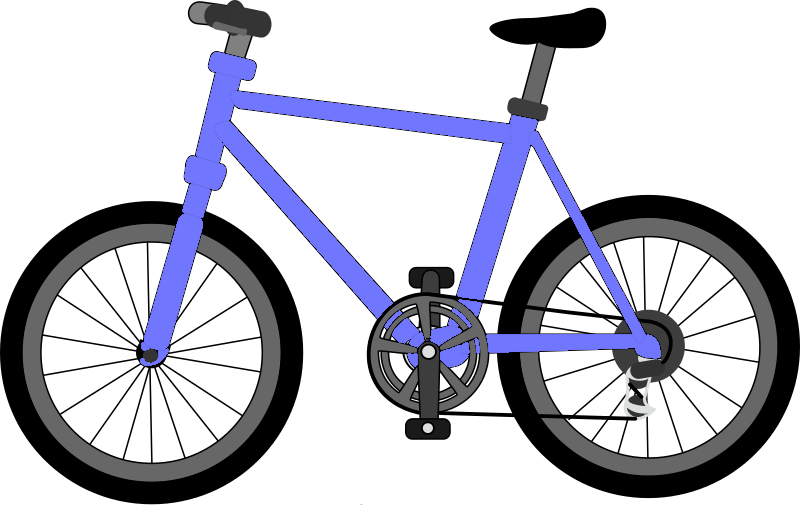

The study of vehicles in motion, for example, how the vehicle's forward motion changes in response to driver input, propulsion output, control ambient conditions.
Applications:

The study of vehicles in motion, for example, how the vehicle's forward motion changes in response to driver input, propulsion output, control ambient conditions.
It is the study of vehicle's motion along its longitudinal axis, during acceleration, deceleration, brake, and other forces and inputs.
It is the study of vehicle's motion perpen-dicular to its longitudinal axis, during changing of direction, maintaining stability, taking a turn, etc.
It is the study of vehicle's motion in the vertical direction, during response to various forces and inputs related to vertical movement, such as speed breaker.